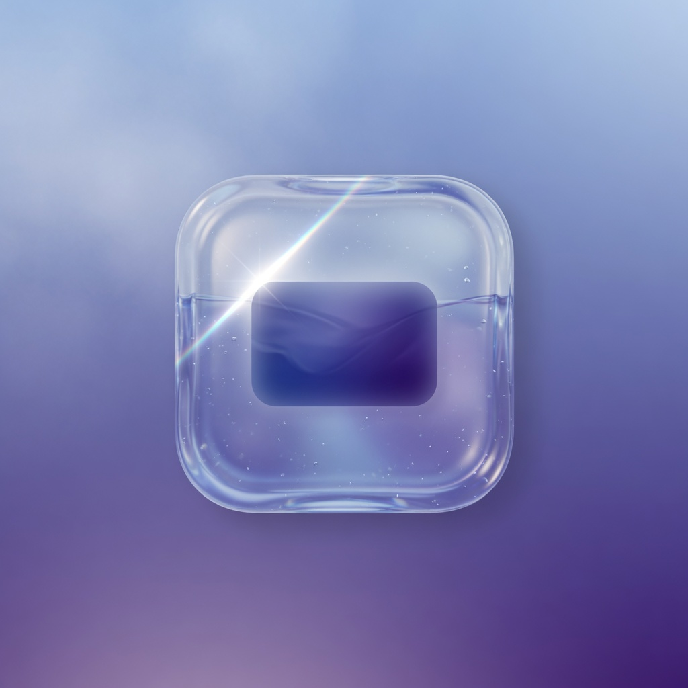

琉光.md 库 / 琉光
琉光
日记
阅读清单
琉光 Lumen · 阅读 · 128 词

手触琉璃，心落纸上。设计稿 · 打磨后再实现。
环境是冷雾山色。铬是玻璃，笔记是纸。当前文件、当前标签都是内嵌胶囊，不是描边。
紫蓝丝绸环境。面板是横向玻璃卡，浮在正中。当前命令是内嵌胶囊，背后工作区被压暗但仍可认。
The glass floats. The paper stays.
紫蓝丝绸只给玻璃染色。纸是墨紫实底，不是第三块玻璃。
外壳是玻璃。表单坐在纸上。主按钮是实心系统蓝，不是玻璃。
设置打开时，笔记被压在后面。
纸在中间。底栏是玻璃岛，当前项是岛内胶囊。热区 44px，避开 Home Indicator。
小屏默认更实的填充。可读优先于通透。
正文不小于 16px。抽屉打开时纸面被压暗。
强调色 #0A84FF。纸面语义色加深以保证 4.5:1。
#0A84FF#8AA9BB#121028#F4F4F6#1C1A28#1C1C1E